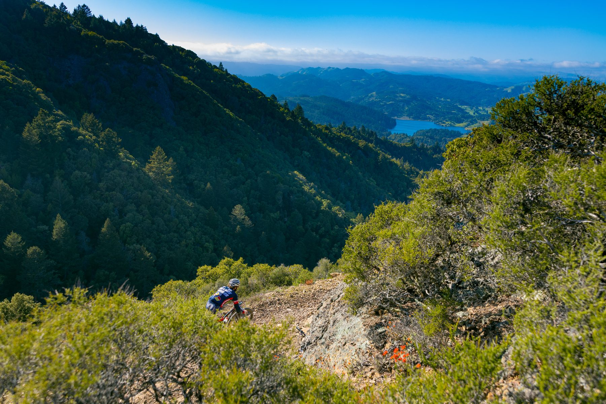

Гравел
Смешанное покрытие и дальние дистанции: асфальт переходит в грунтовку, а гонка — в приключение.
Что это за дисциплина
Гравел — это гибрид шоссейного и туристического велосипеда: рама с посадкой под длинные дистанции, широкие покрышки для грунта и крепления под сумки. Маршруты соединяют асфальт, лесовозные дороги и полевые тропы.
В отличие от шоссе, здесь меньше значит групповая тактика и больше — самостоятельность: навигация, планирование питания и умение чинить байк в полевых условиях.
С чего начать
- Выберите гравел-байк с запасом клиренса под шире покрышки
- Начните с маршрутов до 60 км смешанного покрытия, постепенно увеличивая дистанцию
- Освойте базовый ремонт: прокол, цепь, регулировка тормозов
- Возьмите за привычку планировать точки для воды и еды заранее
Тренировочный подход
План строится вокруг длинных базовых выездов с постепенным ростом дистанции, плюс отдельные сессии по управлению байком на грунте. Для многодневных гонок добавляется работа над выносливостью на второй-третий день подряд.
Другие дисциплины
Попробуйте себя в другом формате.
Готовы выйти на старт?
Оставьте почту — пришлём подборку гравел-маршрутов и список снаряжения для дальних выездов.